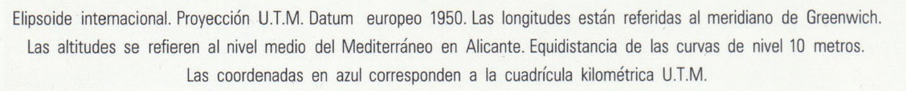

Coordenadas
Alrededor de todo el marco del mapa existen dos graduaciones de coordenadas:
- Coordenadas Geográficas (Longitud, Latitud)
- Coordenadas Planas UTM (X, Y)
Escala
En todo mapa deben existir dos tipos de escalas:
- Escala numérica: en la que se indique literalmente la escala de representación
- Ecala gráfica: que sirva de comprobación geométrica de la escala.
Si hiciéramos una fotocopia reduciendo el tamaño del mapa, la escala original ya no serviría, por tanto necesitaríamos la escala gráfica para averiguar la escala del nuevo documento.
Dirección del Norte
La rosa de los vientos o símbolo que indica cuál es la dirección del norte, es fundamental en un mapa para su correcta orientación.
Hoy en día, en la mayoría de los mapas, sólo se indica dónde está el norte de la proyección de coordenadas:
Sin embargo, en la cartografía oficial del IGN (Instituto Geográfico Nacional) se indican 3 direcciones diferentes en la rosa de los vientos.
Sistema de Referencia
Sistema al que están referidas las coordenadas y proyección utilizada para pasar de la "esfera" al mapa.

También se indica el origen de las altitudes y la equidistancia de las curvas de nivel.
Distancia vertical que separa dos curvas de nivel consecutivas. Suele ser constante en todo el mapa